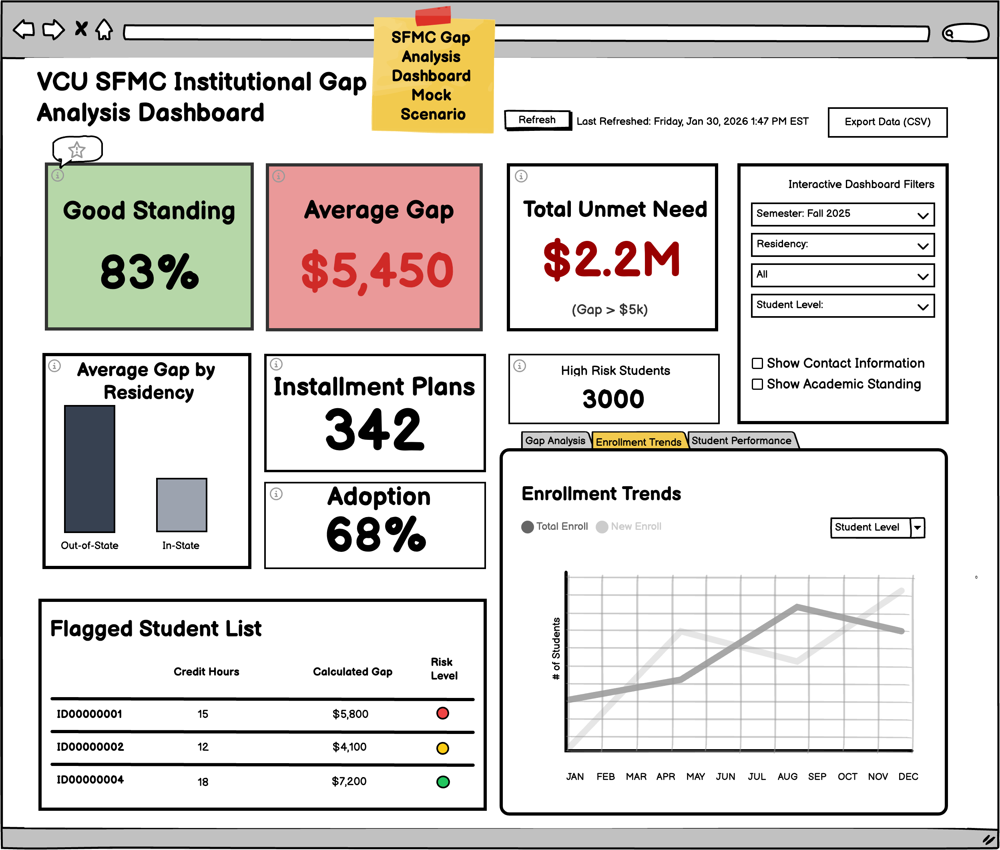
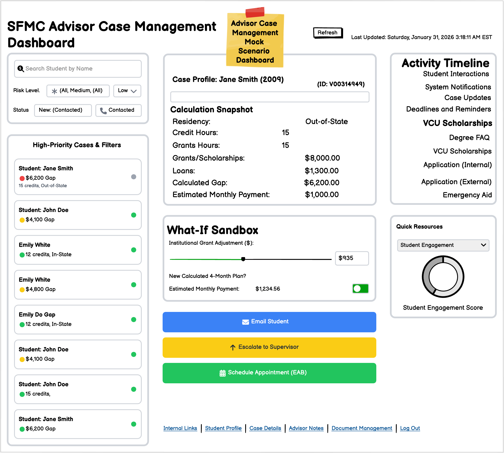

Defining the blueprint. This phase outlines the integrated system design, including user-friendly interfaces and a mock approval workflow. We ensure the architecture is compatible with VCU's existing environment while adhering to State Agency governance and reporting hierarchies.Click A Wireframe for detail.